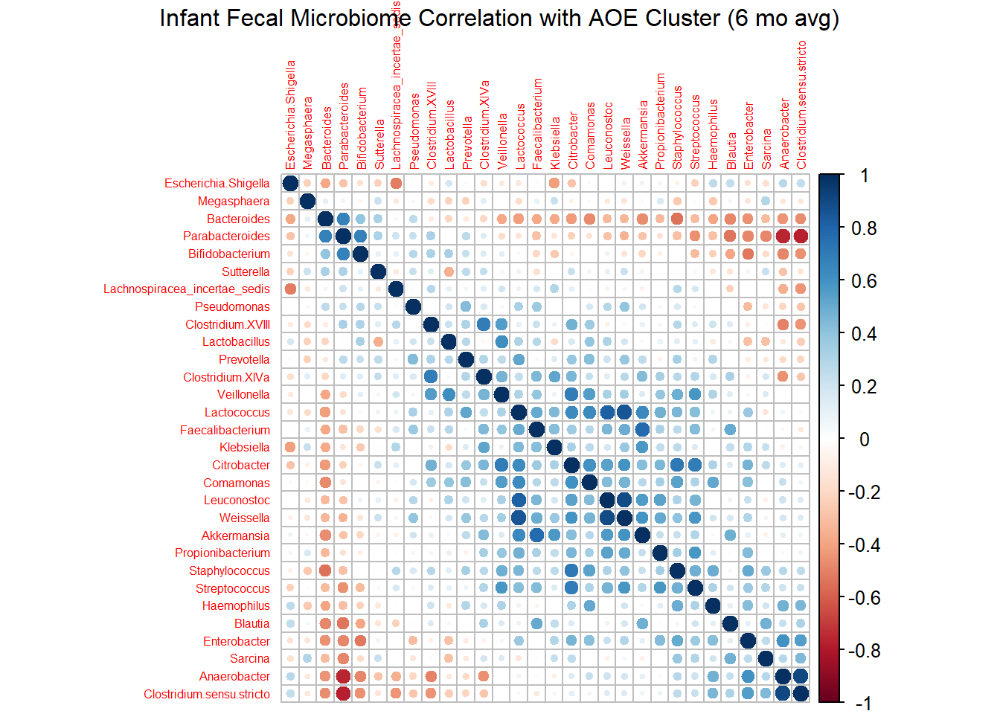
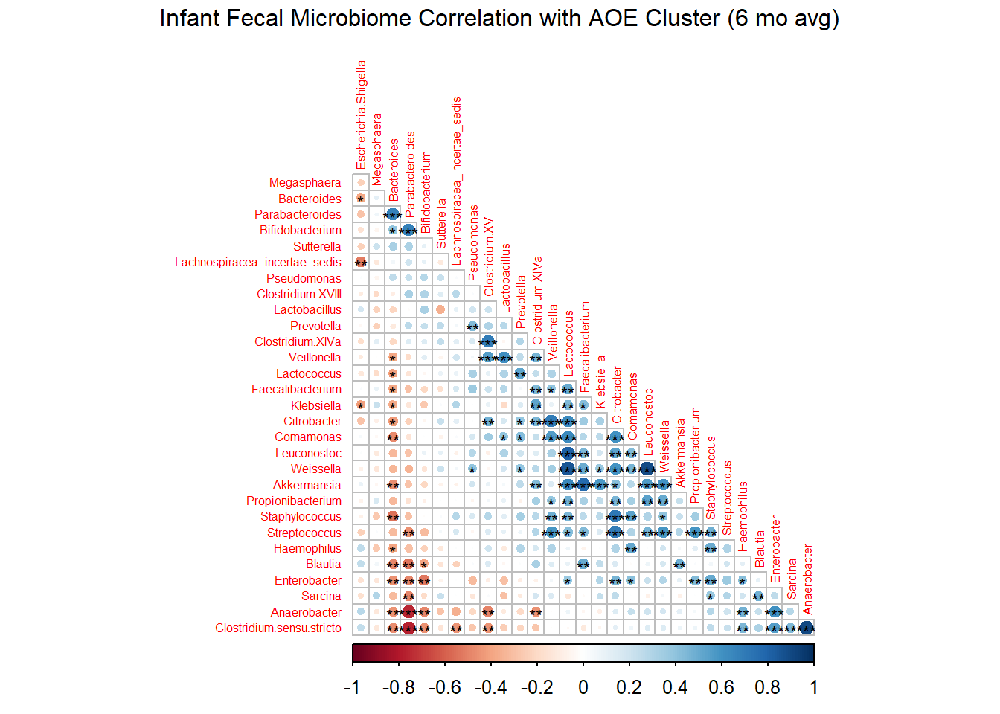
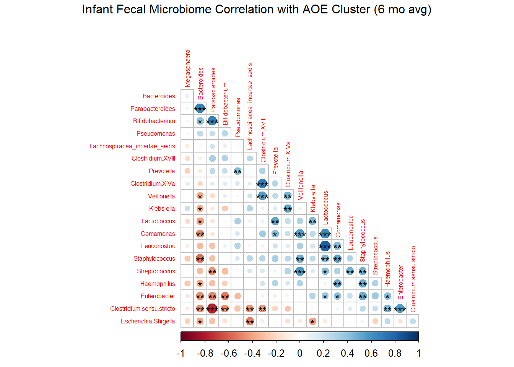

library(dplyr)
library(tidyverse)
library(readr)
library(Hmisc)
library(corrplot)My Dataset
Herein lies a BCB 520 assignment, where I describe some lovely fecal microbiome data.
I have chosen an infant fecal microbiome relative abundance dataset. This data contains the top 30 most abundant bacterial genera, from 21 infants, averaged over 9 collection timepoints. The read counts are expressed as a percentage of the total read counts (relative abundance). The name of this file is IF_top30.rds.
I have also included Infant_Fecal_Relabund.rds which is the less processed version of IF_top30.rds. It has not been averaged across timpepoint, or selected for the top 30.
Background
The samples represented here are a subset of samples from a larger study, where milk, maternal oral, maternal fecal, infant oral, and infant fecal samples were collected and sequenced. The microbiomes were characterized by sequencing the V1-V3 regions of the 16S ribosomal RNA gene.
Dietary data was also collected, and milk fatty acids were qualitatively assessed using GC-FID.
At least 3 papers have been published by the McGuire/Williams laboratory on this dataset, nicknamed “The Gates data” because it was funded by the Bill and Melinda Gates Foundation.
The infant fecal microbiome is already publicly available on the Sequence Read Archive (SRA) so it has been selected for this assignment.
Libraries
Import and view .rds files
A smaller dataset
This is a simple 21 row by 30 row data table. The participants (A003, A005…) are the row names. Each column contains the relative abundance (%) of each of the top 30 bacterial genera. Note that each value is actually the average of up to 9 timepoints, so each value represents the average relative abundance of the genera between day 2 and 6 month after birth.
Load the data set.
IF_top30 <- readRDS("C:/Users/sharo/Desktop/BCB 520/Assignments/IF_top30.rds")View a subset of the data.
IF_top30[,1:4] Bacteroides Escherichia.Shigella Veillonella Clostridium.sensu.stricto
A003 0.23493134 24.673454640 6.6693137 8.296923750
A005 4.02761085 20.209190530 11.1726579 6.019777140
A007 0.19334102 4.074305556 24.9752758 0.659688178
A009 0.02770472 57.396699533 0.1416980 11.107959633
A011 9.26831811 4.852269800 18.2515791 0.052937900
A013 0.25171539 14.938690870 25.1883604 2.902620620
A015 40.65170057 13.094583838 2.0534671 0.152828987
A017 29.87910938 4.391378011 5.1910630 0.307567033
A019 44.56634097 7.588655580 5.0236797 0.106448550
A021 40.75502674 1.106360367 4.9050189 3.952965600
A025 34.51478583 1.733203256 3.5605401 0.000000000
A027 1.02156002 6.573109900 28.7444037 24.638294267
A029 44.22892401 23.098446878 2.1665187 0.090762833
A031 0.05744295 62.947694350 3.3153721 26.952580000
A033 38.51864961 12.478839610 6.6155465 7.548103950
A035 34.68255444 6.776953956 1.5039755 32.013236233
A037 14.03453994 18.774367287 10.5120452 24.897731312
A039 0.11653624 47.718616850 17.9059235 2.086916700
A041 21.72538480 9.548148850 0.5365920 10.075460910
A043 8.18592391 0.006921912 4.7780929 17.086879375
A045 64.73004397 8.060339722 0.2979979 0.002079567A larger dataset
Just for fun, here is a more “uncut” version of the same data table. Note that there are 186 rows because there is a data point for each time point for each participant, and there are 406 columns of data representing bacterial genera with non-zero reads.
(Note that this table has also been processed to exclude non-zero reads).
Infant_Fecal_Relabund <- readRDS("C:/Users/sharo/Desktop/BCB 520/Assignments/Infant_Fecal_Relabund.rds")Data set dimensions
dim(Infant_Fecal_Relabund)[1] 186 406View a subset of the data.
Infant_Fecal_Relabund[1:30,1:4] Unclassified Abiotrophia Acetanaerobacterium Acetivibrio
A003_180 9.749444 0 0.0000000 0
A003_2 10.076098 0 0.0091700 0
A003_10 5.317788 0 0.0000000 0
A003_120 1.054935 0 0.0000000 0
A003_150 3.518440 0 0.0000000 0
A003_30 3.289348 0 0.0000000 0
A003_5 3.287554 0 0.0000000 0
A003_60 6.110080 0 0.0000000 0
A003_90 2.089608 0 0.0000000 0
A003_Mec 4.497608 0 0.0000000 0
A005_10 3.211669 0 0.0000000 0
A005_120 1.230697 0 0.0000000 0
A005_150 7.330550 0 0.0000000 0
A005_180 2.949062 0 0.0000000 0
A005_2 2.898207 0 0.0000000 0
A005_30 8.671352 0 0.0000000 0
A005_5 3.936611 0 0.0000000 0
A005_60 7.455959 0 0.0000000 0
A005_90 3.532036 0 0.0000000 0
A005_Mec 6.088191 0 0.0083500 0
A007_10 2.055499 0 0.0000000 0
A007_120 9.346856 0 0.0000000 0
A007_150 13.934606 0 0.0000000 0
A007_180 8.489646 0 0.0000000 0
A007_2 4.497867 0 0.0775494 0
A007_30 10.863575 0 0.0000000 0
A007_5 4.407339 0 0.0000000 0
A007_60 4.272310 0 0.0000000 0
A007_90 7.544436 0 0.0000000 0
A009_10 6.217265 0 0.0000000 0Describe the data
This is tabular data. While I only have one dimension here, it could be considered multi-dimensional since I have several other datasets for these mother-infant dyads.
I have one category here- infant fecal. Other categories I have are infant oral, maternal fecal, maternal oral, and milk.
There is a time component, which could be considered ordered or sequential.
The unique key is the row name, which is participant in the smaller data set and a participant_time combo in the larger data set. In the largest data sets of all, we have a sampletype_participant_timepoint combo.
The columns (attributes) are read count relative abundance expressed as a percentage of the total read counts per row. These are the quantitative data type.
Correlations
The genera read counts are non-parametric, therefore the spearman-rank correlation was used to assess possible correlations between each set of read counts.
Create correlation matrix
IF_IF_rcorr <- rcorr(as.matrix(IF_top30), type=c("spearman"))Correlation plot 1 - square matrix, no p values, 30x30
corrplot(IF_IF_rcorr$r, method=c("circle"), tl.cex=0.5, order="AOE")
mtext("Infant Fecal Microbiome Correlation with AOE Cluster (6 mo avg)", line =3)
Correlation plot 2 - lower triangle only, with p values starred, 30x30
corrplot(IF_IF_rcorr$r, p.mat=IF_IF_rcorr$P, sig.level=c(0.01,0.05, 0.1),
insig='label_sig', pch.col='black', pch.cex=0.7,
method=c("circle"), tl.cex=0.5, order="AOE", type="lower", diag = F)
mtext("Infant Fecal Microbiome Correlation with AOE Cluster (6 mo avg)", line =3)
Correlation plot 3 - lower triangle only, with p values starred, 20x20
corrplot(IF_IF_rcorr$r[1:20,1:20], p.mat=IF_IF_rcorr$P[1:20, 1:20], sig.level=c(0.01,0.05, 0.1),
insig='label_sig', pch.col='black', pch.cex=0.9,
method=c("circle"), tl.cex=0.5, order="AOE", type="lower", diag = F)
mtext("Infant Fecal Microbiome Correlation with AOE Cluster (6 mo avg)", line =3)